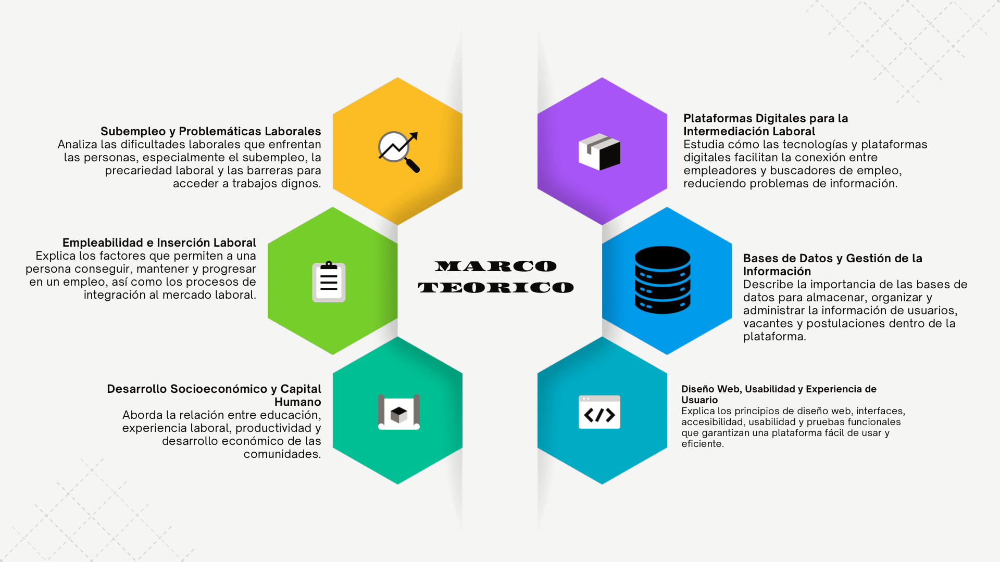

El proyecto combina ideas sobre empleabilidad, plataformas digitales, experiencia de usuario y cuidado de la información. Estos conceptos ayudan a decidir qué mostrar y cómo organizarlo.

Mapa visual de los conceptos que sustentan BrasiliaTrabaja: empleo, herramientas digitales y una experiencia de uso clara.
EMPLEO+TECNOLOGÍA+EXPERIENCIA→ACCESO MÁS CLARO
01 · EMPLEABILIDAD
Capacidades y oportunidades
La empleabilidad reúne conocimientos, experiencia y capacidades relacionadas con el acceso y la permanencia en el trabajo. La búsqueda también depende de que las ofertas sean visibles, claras y lleguen a personas que cumplen sus requisitos.
En el proyecto: presentar vacantes comprensibles para distintos perfiles.
02 · PLATAFORMAS
Información como punto de encuentro
Una plataforma digital puede organizar información y facilitar la relación entre oferta y demanda. El enfoque local permite pensar en candidatos y empleadores de Bosa, incluidos jóvenes que buscan su primera experiencia.
En el proyecto: separar recorridos de candidatos y empleadores.
03 · USABILIDAD
Una experiencia comprensible
La usabilidad considera si las personas pueden realizar sus tareas de forma efectiva, eficiente y satisfactoria. Títulos claros, lenguaje sencillo y diseño adaptable ayudan a orientar la navegación.
En la evaluación: atractivo, facilidad de aprendizaje, eficiencia, confianza, estimulación y novedad.
04 · DATOS Y PRIVACIDAD
Construir con cuidado
El prototipo descrito utiliza IndexedDB para guardar información en el navegador. Firebase y Google Cloud se consideran alternativas futuras, que requerirían reglas de acceso, autenticación, conexión estable y revisión de costos.
Principio: proteger los datos personales y limitar su uso a los fines informados.